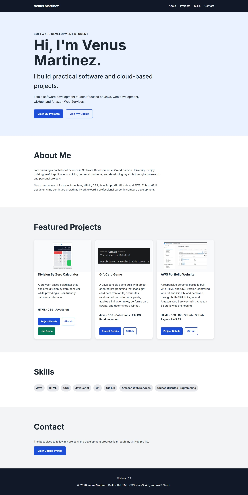

WEB DEVELOPMENT · CLOUD DEPLOYMENT
AWS Portfolio Website
A responsive personal portfolio developed with HTML and CSS, version-controlled using Git and GitHub, and deployed through both GitHub Pages and Amazon Web Services using Amazon S3.
HTML · CSS · Git · GitHub · GitHub Pages · AWS S3
About the Project
This portfolio website was created as a central place to showcase my software development projects, technical skills, education, and continued growth as a developer.
Rather than relying on a website builder or prebuilt portfolio platform, I developed the site using HTML and CSS while using Git and GitHub to manage the source code and development history.
The project also serves as practical experience with web deployment and cloud technologies. The website has been deployed using both GitHub Pages and Amazon S3 static website hosting.
The Portfolio

The website you're currently viewing is the project itself. As I build new applications and develop additional technical skills, the portfolio continues to evolve alongside my development experience.
Development
The website is developed locally using Visual Studio Code. Git provides version control for the project, while GitHub stores the remote repository and provides an additional deployment through GitHub Pages.
Visual Studio Code → Git → GitHub → GitHub Pages
AWS Deployment
In addition to GitHub Pages, the portfolio has been deployed using Amazon Web Services. The static website files are hosted in an Amazon S3 bucket configured for static website hosting.
Working with AWS provided hands-on experience with cloud storage, static website hosting, bucket configuration, and deploying web content outside of a traditional web-hosting platform.
HTML / CSS → Amazon S3 → Static Website Hosting → Live Portfolio
Deployment Architecture
The portfolio can be deployed through two different hosting environments, allowing the same website project to serve as experience with both GitHub-based deployment and AWS cloud hosting.
Portfolio Source Code
|
+------+------+
| |
GitHub Amazon S3
| |
GitHub Pages Static Website
| |
+------+------+
|
Live Portfolio
Key Features
- Responsive HTML and CSS layout
- Dedicated project showcase pages
- Git version control
- GitHub repository integration
- GitHub Pages deployment
- Amazon S3 static website hosting
- Reusable project card components
- External links to project source code and live demos
- Continually expandable project architecture
Technologies & Skills
HTML · CSS · Git · GitHub · GitHub Pages · AWS · Amazon S3 · VS Code · Responsive Web Design
What I Learned
Building this portfolio has given me experience beyond simply creating individual web pages. I have worked with project organization, reusable styling, version control, remote repositories, deployment, and cloud hosting as parts of a complete development workflow.
Deploying the same project through GitHub Pages and Amazon S3 also helped me better understand the distinction between developing an application locally and making that application accessible through a hosting environment.
Most importantly, this portfolio is an ongoing project. As my software development and cloud skills grow, I can continue improving the site and applying new technologies directly to it.